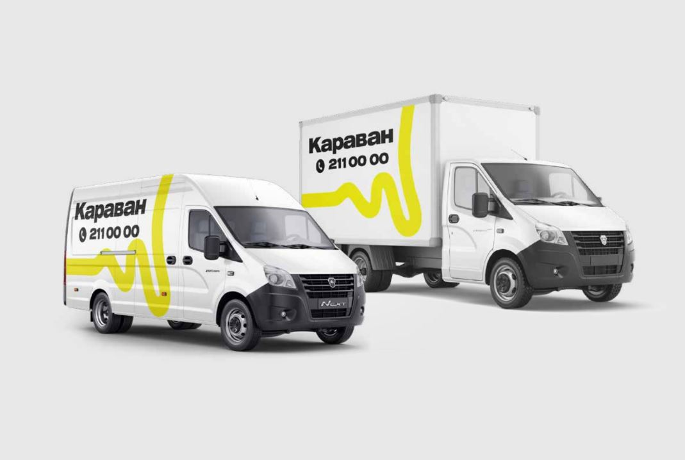
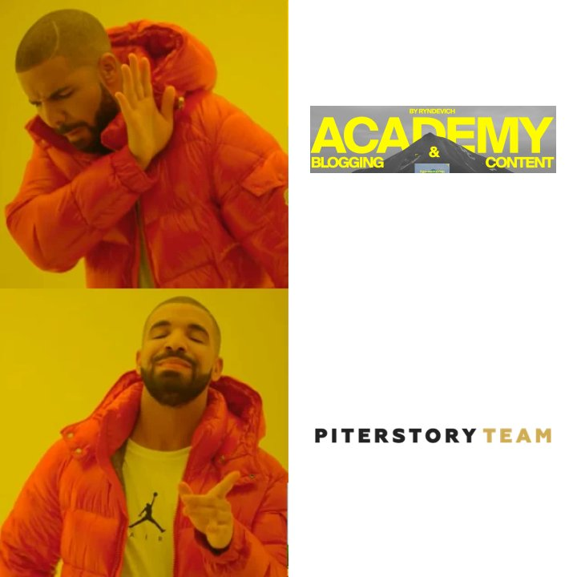
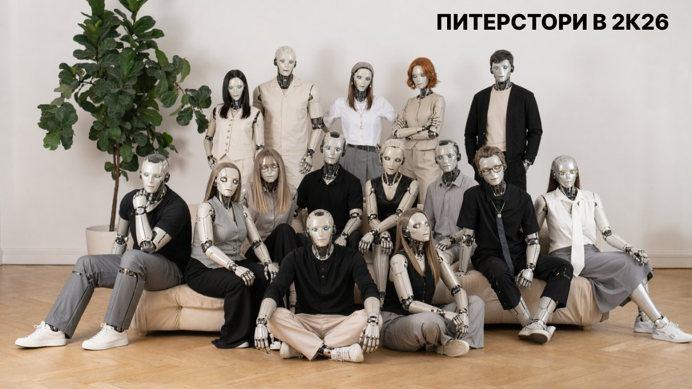
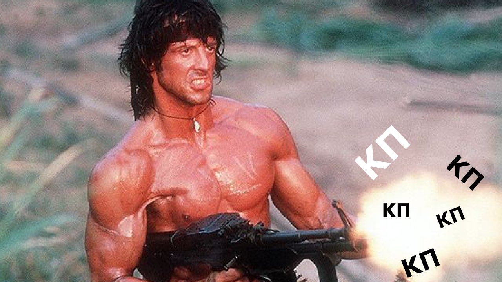
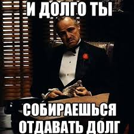
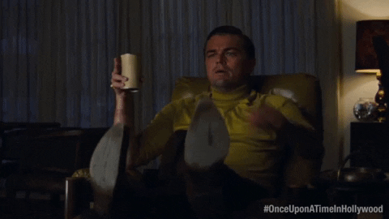
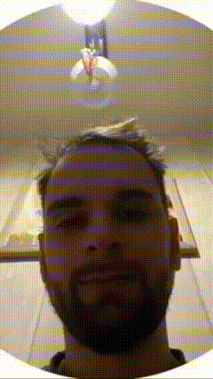
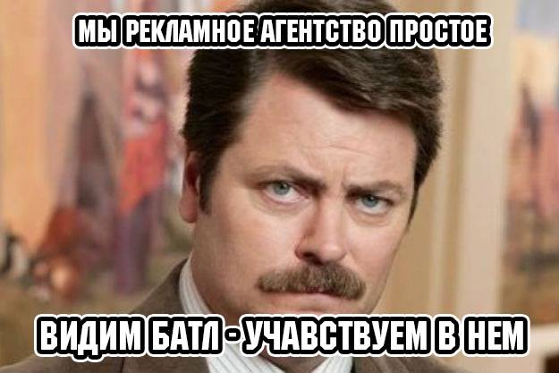

Пролетела еще неделя, и как всегда — не бесследно.
Читаем, чем отметилось агентство Piterstory Team в этот раз.
Оксана закончила квартальный отчет — можем спать спокойно. А еще на этой неделе нам оплатили счет за кепки. Мелочь, а приятно.
Караван подписал NDA, и Ваня доработал дизайн их нового логотипа. Несколько вариантов — один лучше другого. Классика: мы сделали красиво, теперь человек неделю будет мучиться с выбором.

Еще важная новость от Вани: лендинг Piterstory по SMM закончен. Ждем, когда попрут заказы и мы станем жить как короли.
У Семена продолжается эпопея с тендерами. А еще на этой неделе он искал агентство для продвижения личного бренда Сабины. Искал-искал, но лучше нашего не нашел. Что и требовалось доказать.

Сабина пересобрала процесс подготовки КП. Раньше за него отвечали Илья, Лиза и Лена, но, учитывая высокий уровень автоматизации, которого достигли ребята, со следующей недели руль принимает Семен. Теперь заправлять оркестром будет он — level up!
Илья тем временем создал нереально крутую презентацию агентства про ИИ-направление. В четверг впервые продемонстрировали ее Андрею Горлову (владельцу магазина Corneliani), и Андрей просто-напросто выпал в осадок. За нами будущее!

Кроме того, Илья обработал более 60 контактов Альбины и дал обратную связь по каждому. А еще — Ильюха готовится выходить на международный уровень и продавать трусы в Израиле. В общем, без трусов не останемся!
Лизино КП для «Русской турбины» бомбануло — теперь у нас есть новый заказчик. За это стоит выпить.

Кроме того, Лиза научилась штамповать кейсы на сайт. Как это работает: Клод сам собирает инфу на диске, выдает текст, а после проверки — верстает его на сайте. Ни много ни мало, а мечта Сабины исполнилась. От начала работы до финального воплощения — по самым скромным подсчетам 2-3 дня.
Лена закончила интеграцию Клода и Фигмы. Теперь мы получаем на 80% готовое КП за минуту. Именно благодаря этому Лена с Лизой на этой неделе побили рекорд — за один день собрали целых семь КП!!! Воу-воу-воу!

Альбина продолжает штурмовать потенциальных клиентов. Результаты есть: бассейны «Атлантика» хотят с нами работать, а «Пятерочка» позвала во второй тур тендера. Попахивает успехом (и горящей жопой).
Алевтина вышла на финишную прямую по сдаче сайта La Vue, а также припомнила Вадиму неоплаченный счет за тексты. Ждем финальные правки и свои кровные.

Еще Алевтина фиксирует позитивные события: возобновление общения с «Цветочками» и «Семишаговым», а также счастливую находку — 17-летнего креатора ИИ-роликов. Его ролик с обезьянкой за 1300 рублей покорил наши сердца. Не знаем, куда катится мир, но это весело)
Катя на этой неделе сняла ролик для «Коломяжского», который уже выложил Комитет по благоустройству и… забрали на ВГТРК, чтобы показать по телику! Теперь нас можно смотреть с пультом и попкорном.

Сабина связалась с «М.Видео», «Детским миром», «Достаевским», «Грузовичковым» и MSI — и начала переговоры по сотрудничеству. Где больше денег, там мы! И это по-настоящему!!!

Еще Сабина побывала в офисе «Берегов» и еще раз порадовалась за нас. Лучше будем продавать трусы в Израиле, чем снова попадем в эту атмосферу. Выводы сделаны.
Игорь шерстит телефонную книжку, поднимает все связи. Первый рабочий гость нашего офиса — это тоже контакт Игоря.
Ксюша отправила анкету в рейтинг НР2К, нас приняли в ассоциацию агентств ARDA. Ну и настойчиво продолжаем работать с рейтингом Рунета. Ксюша, ты герой.

Рандомные события последних семи дней
Отметили месяц в новом офисе.
Отметили, что глаз Семена снова как новенький.
Альбина посмотрела цветение сакуры. Передает, что цветов мало, а людей много.
Оркестр придумал название отделу маркетинга — «Glass cockpit». То ли кабина пилота, то ли стеклянное очко. Ребятам понравилось — и мы счастливы.
У Кати появился штатив. Теперь наши видеоролики будут еще стабильнее.
Семену сделали фотку на сайт.
Сабина снова баловала всех пышками, а в пятницу закатила мак-вечеринку. Диетологи плачут, команда ликует.
Тема трусов нас не покидает: планируем повесить красные на люстру над рабочим местом Оксаны, чтобы привлекать еще больше денег на наш расчетный счет.